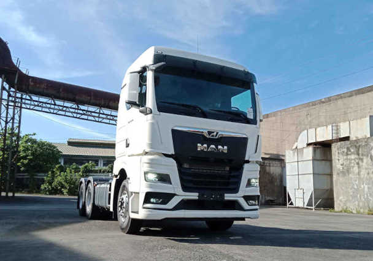
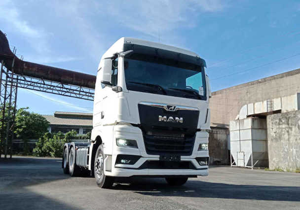
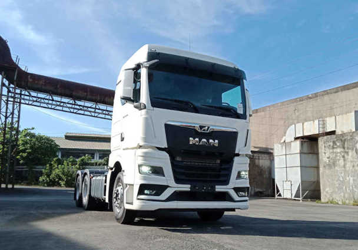
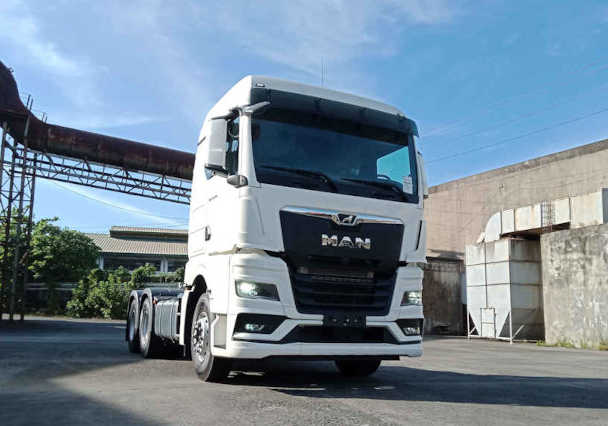

The MAN TG-range is a family of trucks produced since 2000 by the German vehicle manufacturer MAN Truck & Bus. It is the successor to the F2000, L2000, and M2000 series. It consists of the TGA (now discontinued), TGL, TGM, TGS, and TGX. The TG range is currently made up of five models with the introduction of the TGE light commercial vehicle, a rebadged Volkswagen Crafter.